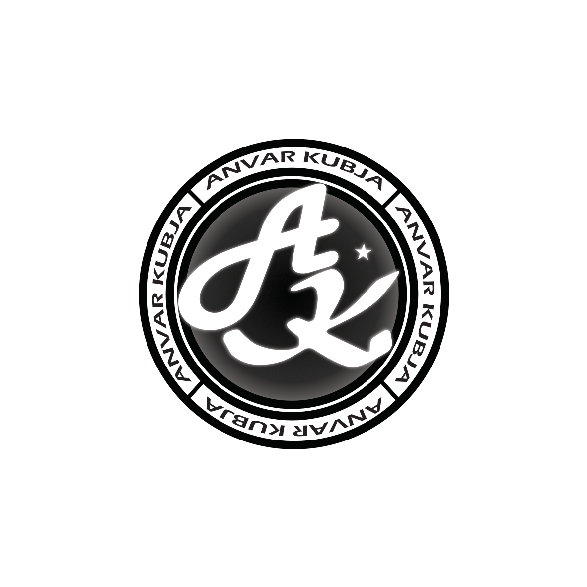
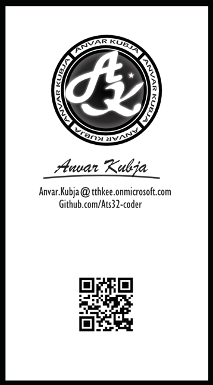
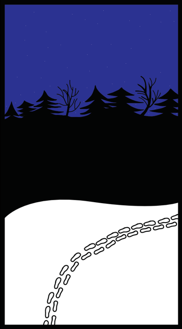

Adobe Illustrator
Adobe Illustrator on vektorgraafika loomise programm, mida kasutatakse logode, illustratsioonide, ikoonide ja kujunduste tegemiseks. See võimaldab luua kvaliteetset ja skaleeritavat graafikat nii digitaalseks kui ka trükikasutuseks.
Personaalne logo
Kasutades kujundeid, pen, curvature ning shape builderi tööriistu, kujundsin oma individuaalse logo
Visiitkaart
Kavandasin enda visiitkaardi kasutades varasemalt tehtud personaalset logo
Eesmine pool
Tagumine pool
Polügoniseeritud Objekt
Kasutades pen tööriista, joonistasin oma valitud objekti üle kolmnurksete polügonidega.
Originaal